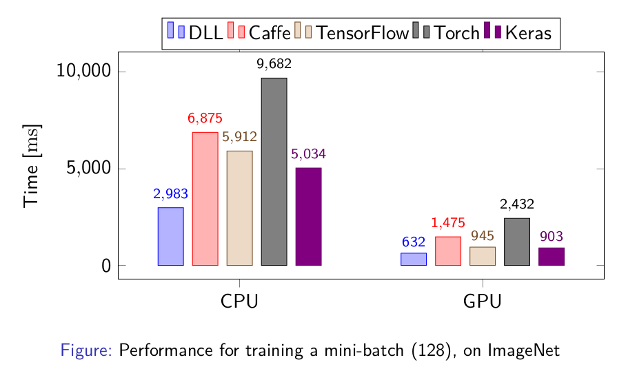

Expression Templates Library (ETL) 1.2 - Complete GPU support
I'm happy to announce the version 1.2 of my Expression Templates Library (ETL): ETL 1.2, two months after I released the version 1.1. This version features much better GPU Support, a few new features and a lot of changes in the internal code.
GPU Support
Before, only algorithms such as 4D convolution or matrix-matrix multiplication were computed in the GPU and lots of operations were causing copies between CPU and GPU version. Now, the support for basic operations has also been completed and therefore, expressions like this:
Can be computed entirely on GPU.
Each matrix and vector containers have a secondary GPU memory space. During the execution, the status of both memory spaces is being managed and when necessary, copies are made between two spaces. In the best case, there should only be initial copies to the GPU and then everything should be done on the GPU. I've also considered using Unified Memory in place of this system, but this is a problem for fast matrix and I'd rather not have two different systems.
If you have an expression such as c = a + b * 2, it can be entirely computed
on GPU, however, it will be computed in two GPU operations such as:
This is not perfect in terms of performance but this will be done without any copies between CPU and GPU memory. I plan to improve this system with a bit more complex operations to avoid too many GPU operations, but there will always be more operations than in CPU where this can easily be done in one go.
There are a few expressions that are not computable on the GPU, such as random
generations. A few transformations are also not fully compatible with GPU.
Moreover, if you access an element with operators [] or (), this
will invalidate the GPU memory and force an update to the CPU memory.
GPU operations are not implemented directly in ETL, there are coming from various libraries. ETL is using NVIDIA CUDNN, CUFFT and CUDNN for most algorithms. Moreover, for other operations, I've implemented a libraries with simple GPU operations: ETL-GPU-BLAS (EGBLAS). You can have a look at egblas if you are interested.
My Deep Learning Library (DLL) project is based on ETL and its performances are mostly dependent on ETL's performances. Now that ETL fully supports GPU, the GPU performance of DLL is much improved. You may remember a few weeks ago I posted very high CPU performance of DLL. Now, I've run again the tests to see the GPU performance with DLL. Here is the performance for training a small CNN on the MNIST data set:

As you can see, the performances on GPU are now excellent. DLL's performances are on par with Tensorflow and Keras!
The next results are for training a much larger CNN on ImageNet, with the time necessary to train a single batch:
Again, using the new version of ETL inside DLL has led to excellent performance. The framework is again on par with TensorFlow and Keras and faster than all the other frameworks. The large difference between DLL and Tensorflow and Keras is due to the inefficiency of reading the dataset in the two frameworks, so the performance of the three framework themselves are about the same.
Other Changes
The library also has a few other new features. Logarithms of base 2 and base 10 are now supported in complement to the base e that was already available before. Categorical Cross Entropy (CCE) computation is also available now, the CCE loss and error can be computed for one or many samples. Convolutions have also been improved in that you can use mixed types in both the image and the kernel and different storage order as well. Nevertheless, the most optimized version remains the version with the same storage order and the same data type.
I've also made a major change in the way implementations are selected for each operation. The tests and the benchmark are using a system to force the selection of an algorithm. This system is now disabled by default. This makes the compilation much faster by default. Since it's not necessary in most cases, this will help regular use cases of the library by compiling much faster.
Overall, the support for complex numbers has been improved in ETL. There are
more routines that are supported and etl::complex is better supported
throughout the code. I'll still work on this in the future to make it totally
complete.
The internal code also has a few new changes. First, all traits have been
rewritten to use variable templates instead of struct traits. This makes the
code much nicer in my opinion. Moreover, I've started experimenting with C++17
if constexpr. Most of the if conditions that can be transformed to if
constexpr have been annotated with comments that I can quickly enable or disable
so that I can test the impact of C++17, especially on compilation time.
Finally, a few bugs have been fixed. ETL is now working better with parallel BLAS library. There should not be issues with double parallelization in ETL and BLAS. There was a slight bug in the Column-Major matrix-matrix multiplication kernel. Binary operations with different types in the left and right hand sides was also problematic with vectorization. The last bug was about GPU status in case ETL containers were moved.
What's next ?
I don't yet know exactly on which features I'm going to focus for the next version of ETL. I plan to focus a bit more in the near future on Deep Learning Library (DLL) for which I should release the version 1.0 soon. I also plan to start support for Recurrent Neural Networks on it, so that will take me quite some time.
Nevertheless, I'm still planning to consider the switch to C++17, since it is a bit faster to compile ETL with if constexpr. The next version of ETL will also probably have GPU-support for integers, at least in the cases that depend on the etl-gpu-blas library, which is the standard operators. I also plan to improve the support for complex numbers, especially in terms of performance and tests. Hopefully, I will have also time (and motivation) to start working on the sparse capabilities of ETL. It really needs much more unit tests and the performance should be improved as well.
Download ETL
You can download ETL on Github. If you only interested in the 1.2 version, you can look at the Releases pages or clone the tag 1.2. There are several branches:
master Is the eternal development branch, may not always be stable
stable Is a branch always pointing to the last tag, no development here
For the future release, there always will tags pointing to the corresponding commits. You can also have access to previous releases on Github or via the release tags.
The documentation is still a bit sparse. There are a few examples and the Wiki, but there still is work to be done. If you have questions on how to use or configure the library, please don't hesitate.
Don't hesitate to comment this post if you have any comment on this library or any question. You can also open an Issue on Github if you have a problem using this library or propose a Pull Request if you have any contribution you'd like to make to the library.
Hope this may be useful to some of you :)